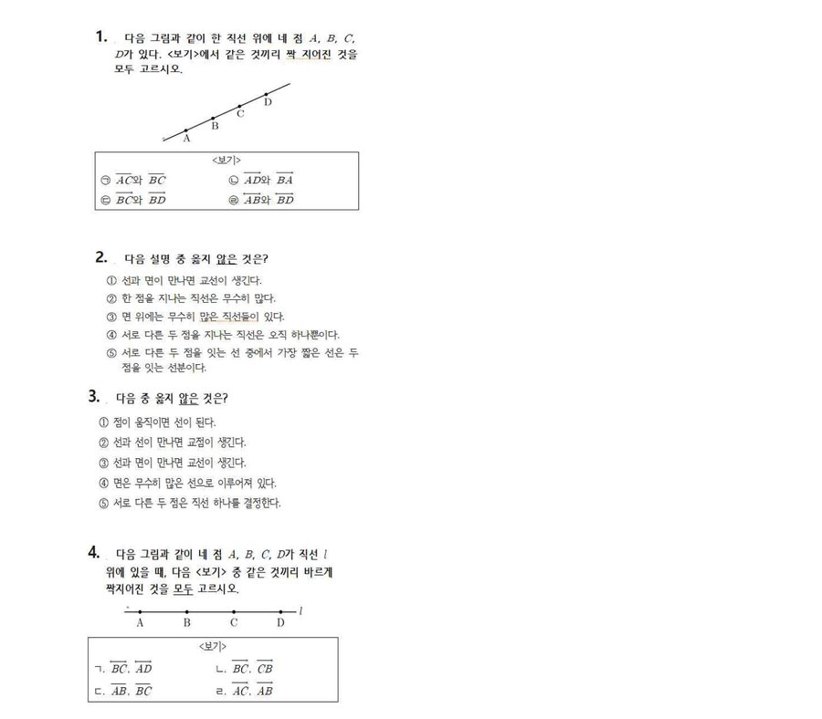

성소의 마지막 기구를 배치하자 정적이 흘렀다.
자세히 보니… 언약궤가 없다. 서둘러 1층으로 내려오니, 상자 하나가 눈에 띈다. 언약궤가 있는 곳은 이 상자 안에 있을 것이다. 그런데 상자는 4자리 비밀번호로 잠겨 있다.

진행 방법 — 중1 학생이 먼저 답을 말해보세요. 조에서 모른다는 의견이 모이면 함께 풀이하고, 중1 학생이 이해한 뒤 다시 설명해주세요.
네 문제의 답으로 상자를 여는 4자리 비밀번호를 만듭니다. 정확한 조합 방법(예: 답을 순서대로 이어 붙이기 등)은 M6 담당 선생님이 확인 후 이 문장을 구체적으로 바꿔주세요 — PDF 문제지에는 조합 방법이 적혀 있지 않았습니다.